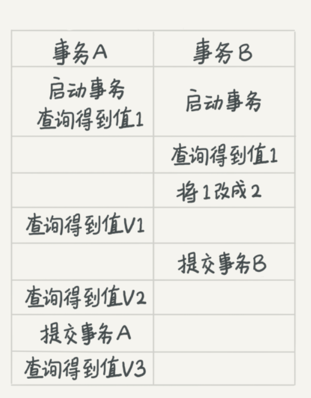
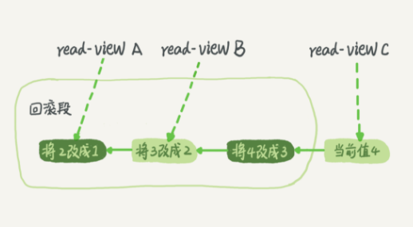

第三节 事务隔离
事务就是要保证一组数据库操作，要么全部成功，要么全部失败。
在 MySQL 中，事务支持是在引擎层实现的。你现在知道，MySQL 是一个支持多引擎的系统，但并不是所有的引擎都支持事务。比如 MySQL 原生的 MyISAM 引擎就不支持事务，这也是 MyISAM 被 InnoDB 取代的重要原因之一。
1、隔离性与隔离级别
1-1 隔离性
提到事务，你肯定会想到 ACID（Atomicity、Consistency、Isolation、Durability，即原子性、一致性、隔离性、持久性），今天我们就来说说其中 I，也就是“隔离性”。
当数据库上有多个事务同时执行的时候，就可能出现脏读（dirty read）、不可重复读（non-repeatable read）、幻读（phantom read）的问题，为了解决这些问题，就有了“隔离级别”的概念。
- 脏读: 读到其他事务未提交的数据；
- 不可重复读：前后读取的记录内容不一致；
- 幻读：前后读取的记录数量不一致。
1-2 隔离级别
在谈隔离级别之前
你首先要知道，隔离得越严实，效率就会越低。因此很多时候，我们都要在二者之间寻找一个平衡点。
SQL 标准的事务隔离级别包括：读未提交（read uncommitted）、读提交（read committed）、可重复读（repeatable read）和串行化（serializable ）。下面我逐一为你解释：
- 读未提交是指，一个事务还没提交时，它做的变更就能被别的事务看到。
- 读提交是指，一个事务提交之后，它做的变更才会被其他事务看到。
- 可重复读是指，一个事务执行过程中看到的数据，总是跟这个事务在启动时看到的数据是一致的。当然在可重复读隔离级别下，未提交变更对其他事务也是不可见的。
- 串行化，顾名思义是对于同一行记录，“写”会加“写锁”，“读”会加“读锁”。当出现读写锁冲突的时候，后访问的事务必须等前一个事务执行完成，才能继续执行。
其中“读提交”和“可重复读”比较难理解，假设数据表 T 中只有一列，其中一行的值为 1，下面是按照时间顺序执行两个事务的行为。
mysql> create table T(c int) engine=InnoDB;
insert into T(c) values(1);

同的隔离级别下，事务 A 会有哪些不同的返回结果:
- 若隔离级别是“读未提交”， 则 V1 的值就是 2。这时候事务 B 虽然还没有提交，但是结果已经被 A 看到了。因此，V2、V3 也都是 2。
- V1, V2, V3: 2
- 若隔离级别是“读提交”，则 V1 是 1，V2 的值是 2。事务 B 的更新在提交后才能被 A 看到。所以， V3 的值也是 2。
- 一个事务提交之后，它做的变更才会被其他事务看到。
- V1: 1
- V2, V3: 2
- 若隔离级别是“可重复读”，则 V1、V2 是 1，V3 是 2。之所以 V2 还是 1，遵循的就是这个要求：事务在执行期间看到的数据前后必须是一致的。
- 事务在执行期间看到的数据前后必须是一致的
- V1, V2: 1
- V3: 2
- 若隔离级别是“串行化”，则在事务 B 执行“将 1 改成 2”的时候，会被锁住。直到事务 A 提交后，事务 B 才可以继续执行。所以从 A 的角度看， V1、V2 值是 1，V3 的值是 2。
- 事务A一开始查询值1的时候就获得了读锁，根据两阶段加锁，事务A获得的锁要在commit的时候才释放，
- 所以事务B在修改1为2的时候申请写锁会阻塞直到事务A提交，
- 事务A提交之前获取的值都是1，所以V1 V2都是1，
- 事务A提交后事务B获取到写锁完成更新操作，所以V3是2
1-3 隔离视图
数据库里面会创建一个视图，访问的时候以视图的逻辑结果为准。
- 在“可重复读”隔离级别下，这个视图是在事务启动时创建的，整个事务存在期间都用这个视图
- 在“读提交”隔离级别下，这个视图是在每个 SQL 语句开始执行的时候创建的。
- 这里需要注意的是，“读未提交”隔离级别下直接返回记录上的最新值，没有视图概念；
- 而“串行化”隔离级别下直接用加锁的方式来避免并行访问。（没有视图的概念）
数据库行为是有所不同的。Oracle 数据库的默认隔离级别其实就是“读提交”，因此对于一些从 Oracle 迁移到 MySQL 的应用，为保证数据库隔离级别的一致，你一定要记得将 MySQL 的隔离级别设置为“读提交”
1-4 启动参数
将启动参数 transaction-isolation 的值设置成 READ-COMMITTED。
mysql> show variables like 'transaction_isolation';
+-----------------------+----------------+
| Variable_name | Value |
+-----------------------+----------------+
| transaction_isolation | READ-COMMITTED |
+-----------------------+----------------+
有些版本是：
tx_isolation5.7版本就是@@tx_isolation /
1-5 什么时候需要“可重复读”的场景
管理一个个人银行账户表。一个表存了账户余额，一个表存了账单明细。到了月底你要做数据校对，也就是判断上个月的余额和当前余额的差额，是否与本月的账单明细一致。你一定希望在校对过程中，即使有用户发生了一笔新的交易，也不影响你的校对结果。
2、事务隔离的实现
2-1 可重复读的回滚操作
这里我们展开说明“可重复读”。
在 MySQL 中，实际上每条记录在更新的时候都会同时记录一条回滚操作。记录上的最新值，通过回滚操作，都可以得到前一个状态的值。
意思就是除了记录变更记录，还会记录一条变更相反的回滚操作记录，前者记录在redo log，后者记录在undo log
假设一个值从 1 被按顺序改成了 2、3、4，在回滚日志里面就会有类似下面的记录。

- 当前值是 4，但是在查询这条记录的时候，不同时刻启动的事务会有不同的 read-view。
- 在视图 A、B、C 里面，这一个记录的值分别是 1、2、4，同一条记录在系统中可以存在多个版本，就是数据库的多版本并发控制（MVCC）。
在可重复读隔离级别中，表中的数据其实已经改变，在前面的视图里，需要查找某条记录时，是通过取当前数据，再取视图对应的回滚段回滚到该视图的值。
- 对于 read-view A，要得到 1，就必须将当前值依次执行图中所有的回滚操作得到。
- 即使现在有另外一个事务正在将 4 改成 5，这个事务跟 read-view A、B、C 对应的事务是不会冲突的
2-2 回滚日志的删除
什么时候删除呢？答案是，在不需要的时候才删除。也就是说，系统会判断，当没有事务再需要用到这些回滚日志时，回滚日志会被删除
什么时候才不需要了呢？就是当系统里没有比这个回滚日志更早的 read-view 的时候。
没有其它事物线程还在使用当前版本的undo时候，purge进程进行回收。
当没有比回滚日志更早的读视图的时候，这个数据不会再有谁驱使它回滚了，这个回滚日志也就失去了用武之地，可以删除了
2-3 尽量不要使用长事务
长事务意味着系统里面会存在很老的事务视图。
由于这些事务随时可能访问数据库里面的任何数据，所以这个事务提交之前，数据库里面它可能用到的回滚记录都必须保留，这就会导致大量占用存储空间。
长事务导致对应的事务视图长时间存在，那么对应的回滚日志也是会一直存在的
在 MySQL 5.5 及以前的版本，回滚日志是跟数据字典一起放在 ibdata 文件里的，即使长事务最终提交，回滚段被清理，文件也不会变小。
除了对回滚段的影响，长事务还占用锁资源，也可能拖垮整个库，这个我们会在后面讲锁的时候展开。
3、事务的启动方式
MySQL 的事务启动方式有以下几种：
3-1 显式启动事务语句
begin 或 start transaction。配套的提交语句是 commit，回滚语句是 rollback。
3-2 set autocommit=0
set autocommit=0，这个命令会将这个线程的自动提交关掉。- 意味着如果你只执行一个 select 语句，这个事务就启动了，而且并不会自动提交。
- 这个事务持续存在直到你主动执行
commit或rollback语句，或者断开连接。
通过如下命令验证了，的确只是执行一个查询，innodb_trx表中就多了一条RUNNING的事务
select * from information_schema.innodb_trx ;
set autocommit=0
select * from user;
select * from information_schema.innodb_trx
有些客户端连接框架会默认连接成功后先执行一个 set autocommit=0 的命令。这就导致接下来的查询都在事务中，如果是长连接，就导致了意外的长事务。
3-3 set autocommit=1（推荐）
因此，我会建议你总是使用 set autocommit=1, 通过显式语句的方式来启动事务。
autocommit=1;表示MySQL自动开启和提交事务。比如执行一个update语句，语句只完成后就自动提交了。不需要显示的使用begin、commit来开启和提交事务。 所以，当我们需要对某些操作使用事务的时候，手动的用begin、commit来开启和提交事务。
在 autocommit 为 1 的情况下，用 begin 显式启动的事务，如果执行 commit 则提交事务。
如果执行 commit work and chain，则是提交事务并自动启动下一个事务，这样也省去了再次执行 begin 语句的开销。同时带来的好处是从程序开发的角度明确地知道每个语句是否处于事务中。
你可以在 information_schema 库的 innodb_trx 这个表中查询长事务，比如下面这个语句，用于查找持续时间超过 60s 的事务。
select * from information_schema.innodb_trx where TIME_TO_SEC(timediff(now(),trx_started))>60
4、小节总结
系统里面应该避免长事务，如果你是业务开发负责人同时也是数据库负责人，你会有什么方案来避免出现或者处理这种情况呢？
4-1 首先，从应用开发端来看：
- 确认是否使用了
set autocommit=0。这个确认工作可以在测试环境中开展，把 MySQL 的general_log开起来，然后随便跑一个业务逻辑，通过general_log的日志来确认。一般框架如果会设置这个值，也就会提供参数来控制行为，你的目标就是把它改成 1。 - 确认是否有不必要的只读事务。有些框架会习惯不管什么语句先用
begin/commit框起来。我见过有些是业务并没有这个需要，但是也把好几个select语句放到了事务中。这种只读事务可以去掉。 - 业务连接数据库的时候，根据业务本身的预估，通过
SET MAX_EXECUTION_TIME命令，来控制每个语句执行的最长时间，避免单个语句意外执行太长时间。
4-2 其次，从数据库端来看：
- 监控
information_schema.Innodb_trx表，设置长事务阈值，超过就报警 / 或者 kill； - Percona 的
pt-kill这个工具不错，推荐使用；在业务功能测试阶段要求输出所有的general_log，分析日志行为提前发现问题； - 如果使用的是 MySQL 5.6 或者更新版本，把 i
nnodb_undo_tablespaces设置成2（或更大的值）。如果真的出现大事务导致回滚段过大，这样设置后清理起来更方便。